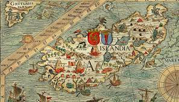
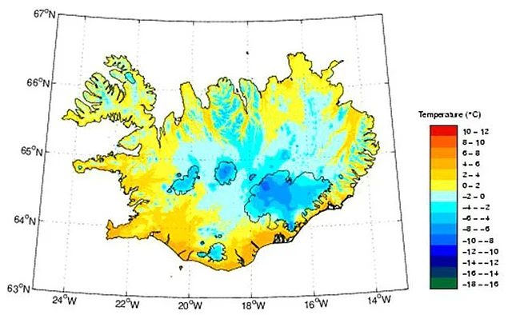
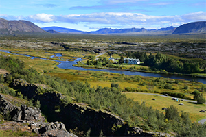
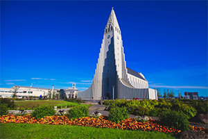
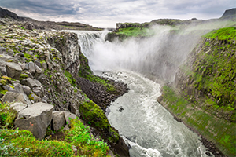
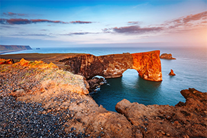
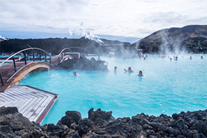

Известны факты находок на территории Исландии монет Римской империи, датируемых правлением императоров Марка Аврелия, Проба и Диоклетиана (II—III века н. э). Неизвестно, принесли их с собой викинги или острова всё же были посещены задолго до IX века. Обращает на себя внимание факт неоднократного упоминания в римской литературе «Туле» или «Дальнего Туле», о котором рассказывал ещё греческий мореплаватель IV века до н. э. Пифей из Массалии и природно-географическое описание которого во многом напоминает Исландию. Также есть мнение, что первыми остров посетили ирландские монахи, которые ещё в эпоху раннего средневековья начали искать пустынные места и удалённые острова, где они могли в уединении молиться Богу. В середине VII века они обнаружили Фарерские острова, где стали селиться и разводить овец.

Островное государство, расположенное на западе Северной Европы в северной части Атлантического океана (к северо-западу от Великобритании), на севере и северо-востоке омывается Северным Ледовитым океаном.
Холодный морской, по Алисову также квалифицируется как морской субарктический.Зима в Исландии для 60-х северных широт мягкая, средняя температура около 0°С. Летом средняя температура около +10 °C. В горных внутренних районах в любое время года значительно холоднее.

Исландская кухня — национальная кухня Исландии, имеет долгую историю. Важными составляющими исландской кухни являются баранина, молочные продукты и рыба, последнее связано с тем, что Исландия традиционно была заселена только вблизи своего побережья. Популярные блюда в Исландии включают skyr, hangikjöt (копченую баранину), kleinur, laufabrauð и bollur. Þorramatur — это традиционный фуршет, который подают на зимних фестивалях под названием Þorrablót; он включает в себя выбор традиционно вяленых мясных и рыбных продуктов, которые подаются с rúgbrauð (плотный тёмный и сладкий ржаной хлеб) и бреннивин (исландский аквавит). Ароматы этой традиционной деревенской еды проистекают из методов её хранения; маринование в ферментированной сыворотке или рассоле, сушка и копчение.

Если вы не знаете, что посетить в Исландии в первую очередь, приезжайте посмотреть на знаменитые каньоны, долины и озера (в том числе, озеро Тингваллаватн) Национального парка. Природный объект, изрезанный вулканическими разломами, внесен в список Наследия ЮНЕСКО. Ни один обзор не сможет передать всю красоту этих мест.

Главные достопримечательности Исландии не только природные, но и исторические. Такие как шедевр архитектуры в стиле модерн - лютеранский собор Хадльгримскиркья. Огромная высота здания позволяет увидеть его из любой точки города Рейкявик.

Ваша поездка в страну не будет успешной, если осматривая достопримечательности Исландии, вы не увидите самый мощный и «самый бурлящий» водопад Европы. Природный памятник располагается в национальном парке Йёкюльсаургльювюр. Съемки фантастического фильма Р. Скотта «Прометей» проводились именно здесь. Согласно легенде картины, водопад стал местом «зарождения самой жизни».

Описание мыса гласит, что именно здесь вы можете увидеть гордость исландцев – птичий заповедник тупиков. Не менее интересны оригинальные арки и башенки, сформированные океаном и ветром, а также Черный вулканический пляж Рейнисфьяра.

Это название носят различные достопримечательности Исландии – и популярный геотермальный курорт, о котором слышал каждый турист в стране. И богатое минералами рукотворное озеро, называемое чудом природы.